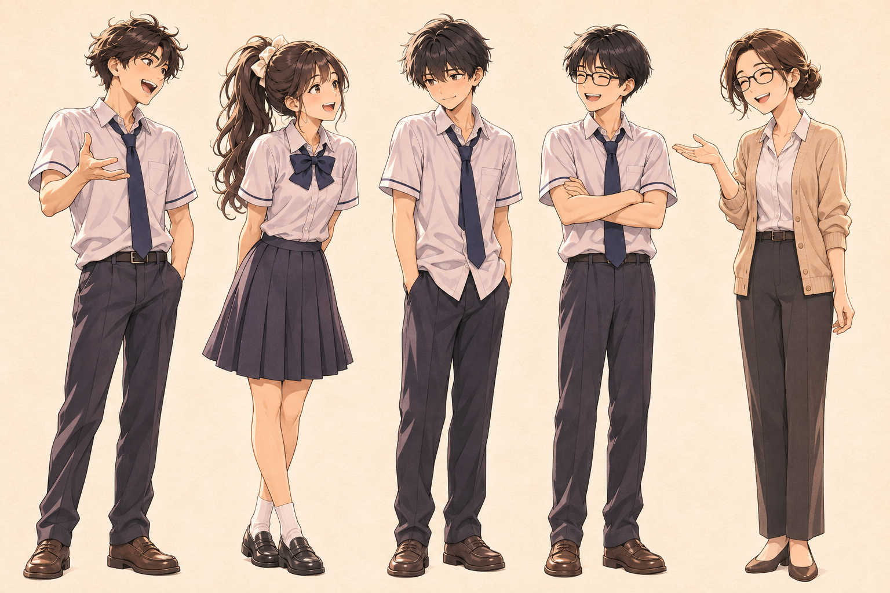

三個故事，分別練習：不取綽號、不傳閒話、用具體的話表達困擾。
量表呈現故事中的變化，並非真實人物的心理評估。沉默有時是在保護自己；學生不必獨自制止衝突，可以先離開並向可信任的大人求助。
角色與情節皆為虛構。班上若正有類似事件，請先與輔導老師討論使用方式。

由左到右：阿哲（深棕蓬鬆髮）、小晴（高馬尾與米白蝴蝶結）、小宇（較短深色亂髮、較鬆的領帶）、玩家同學（黑色方框眼鏡）、老師（低髮髻、圓框眼鏡、米色外套）。新場景使用同一份設定圖作參考。
平板橫放：左邊看圖、右邊閱讀與選擇。直放：由上往下閱讀，不必強制轉向。設定中可開大字閱讀；瀏覽器仍可自行縮放。
思考時間與訊息顯示設定，在下一個情境生效。開啟設定或路線時，倒數會暫停。
結局與設定僅保存在這個瀏覽器，不儲存暱稱。
如果是你，會怎麼回？
一句玩笑、一則轉傳、一次沉默。在教室和群組裡，你的選擇，會讓故事走向哪裡？
3 個故事 · 每條路線 6 次選擇 · 15 種結局
用暱稱就好。接下來，你也是七年三班的一員。
這句話之後……